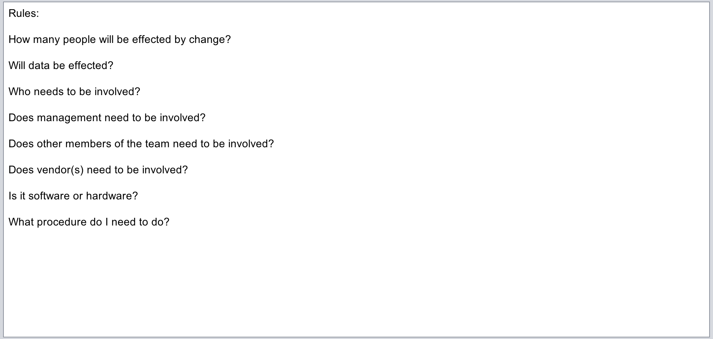
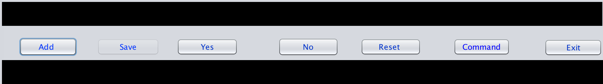
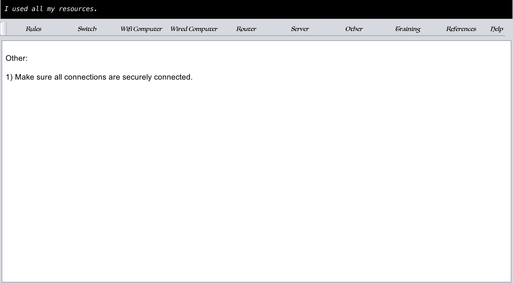
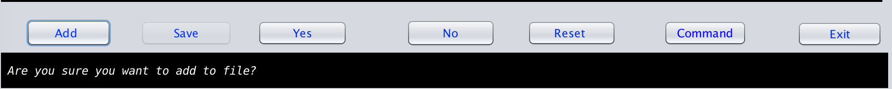
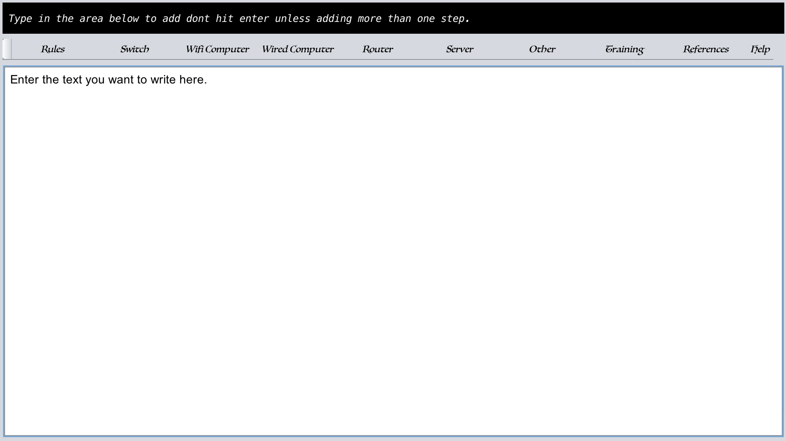
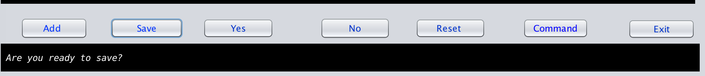
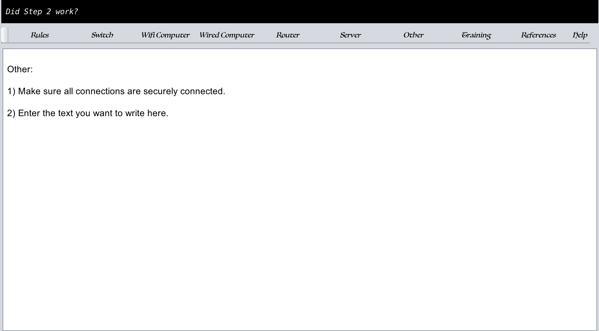
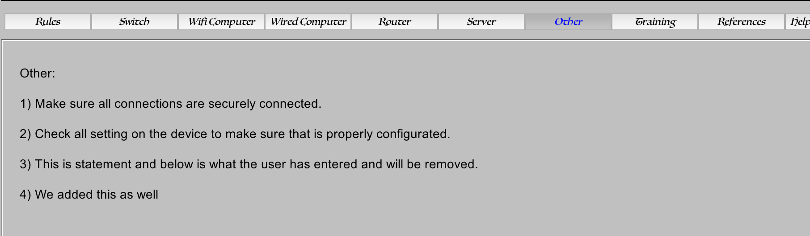
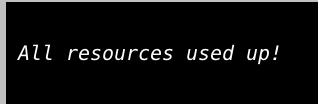
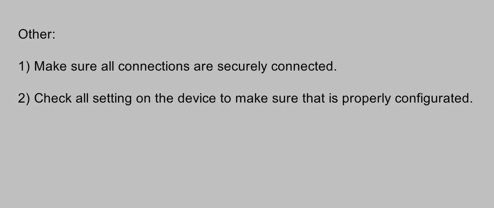

Help Center
Introduction Page:
This is the general rules that you have to keep in mind when doing networking (see image 1):

Button and Response area:
This area is where it asks
questions for users to answers and the buttons that the users can use
to answer the questions (image 2).

The two black boxes are used to display information. The top black box displays what level of authority should be involved in performing the task at hand.
The lower black box is used for asking questions of the user such as “Did step 1 work?”. If that step didn’t work, click no and it will go to the next step that you should try.
The buttons are Add, Save, Yes, No, Reset, Command, and exit.
Exit Button:
Closes the program.
Command Button:
Opens up a terminal for users.
Yes, and No Buttons:
Are used to answer the questions in the second black box.
Add:
This button is used to add any additional information that a user knows about that isn’t
Listed.
Save:
Save button allows user to save the data that they are adding.
How to add new data:
NOTES:
You have to be on one of the following tabs to add.
Switch
Wifi
Wired
Router
Server
Other
References
Select the section, you want to add to such as Other (see Image 3). AS you Can see in the black box it will say I used all my resources. This means that the file doesn’t contain any more information.

Click on the add button. After clicking the button, the black box will look similar to Image 4

Answer the question in the black box by hitting the yes button. This will allow you to type in the white box where the steps were located.

Type in the information that you want into the white area below the tabs (see image 5). Do not add numbers, because that is programmed in the program to do that. Also do not hit Enter or Return.
When done typing in the information that you want to add click on the save button. When you click on the save button you will get another question asking, “Are you ready to save?” (see image 6).

Answer the question in the black box by hitting yes and it will show you the last step you were on and the step you add (unless you didn’t go to the last step before adding) You should see something similar to image 7.

Now that is how you add a new data to Network Connectivity Troubleshooting.
Resetting Section:
This section will show you how to set a certain section back to default.
First you have to be in the section you want to set back to default. We will be resting the Other section. (notice that the text is blue this shows which section we are in. see image 8).

2. Next click on the Reset Button.
3. After you click on the Reset button, you will see a question asking you if you want to set back to default (see image 9).
4. Next click yes. (You will see the following in the questions section and in the display. See image 10 and image 11)


The Tab Section:
This sections allows you to tab through varies sections. The tab buttons will take you through each sections. As stated above only certain sections are able to have data added to them or set back to default (see image8).
Rules, Training, Help, and References Sections:
Rules Section:
This section is basically an outline to what a user should be thinking about as he/she is working on a network.
Training Section:
This section is to give the user a proper training when working on a network that contains a lot of variables such as a Hospital that has clients within clients.
Help Section:
This section is what you are on now that is showing you how the program works and what the features that it has is for.
Reference Section:
This section has links to
were trouble shooting came from as well as allowing the user
to add links for quick references to get back to links they been to
that helped them solve an issue.
For farther assistance
contact: jomainteractive@gmail.com